Modern Heritage 1
Living Traditions 97

Adire indigo resist dyeing
Nigeria · Crafts and makingPlay preview · in the Textile Crafts of the World app
Agaseke basket weaving
Rwanda · Crafts and makingPlay preview · in the Basketry & Straw of the World app
Al Talli Braid Embroidery
United Arab Emirates · Crafts and making
Allo nettle fibre weaving
Nepal · Crafts and making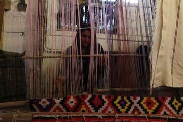


Banig mat weaving
Philippines · Crafts and making
Batik wax-resist pattern studio
Indonesia +1 · Crafts and makingPlay preview · in the Textile Crafts of the World app
Belarusian straw weaving
Belarus · Crafts and making


Botswana coil basket weaving
Worldwide · Crafts and makingPlay preview · in the Basketry & Straw of the World app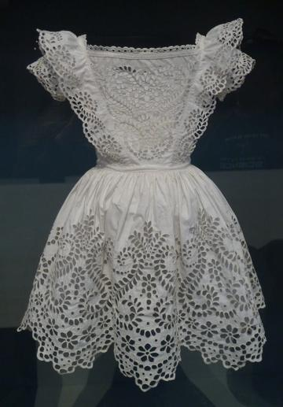
Broderie anglaise
United Kingdom · Crafts and makingPlay preview · in the Stitch & Thread of the World app
Celtic knot weave
Ireland +1 · Crafts and makingPlay preview · in the Textile Crafts of the World app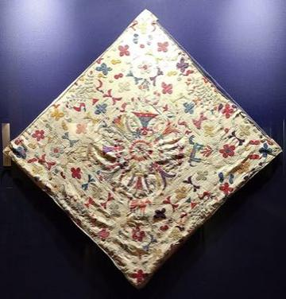
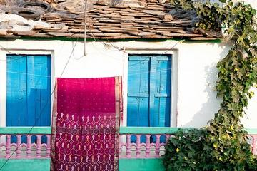

Chechia Felt-Cap Workshop
Tunisia · Crafts and making
Chikankari white-on-white embroidery
Worldwide · Crafts and makingPlay preview · in the Weaving & Lace of the World app
Cross-Stitch Pattern Weaving
Ukraine · Crafts and makingPlay preview · in the Textile Crafts of the World app
Dhaka weave pattern loom
Nepal · Crafts and makingPlay preview · in the Textile Crafts of the World app
Dorze cotton weaving
Ethiopia · Crafts and making
Faso Dan Fani Strip Weaving
Burkina Faso · Crafts and making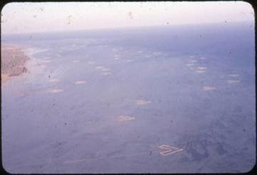
Gargoor Fish-Trap Weaving
Bahrain · Crafts and making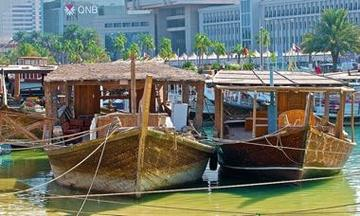
Gulf Dhow Hull Builder
Qatar · Crafts and making
Haapsalu lace shawl knitting
Estonia · Crafts and makingPlay preview · in the Weaving & Lace of the World app
Hardanger embroidery
Norway · Crafts and making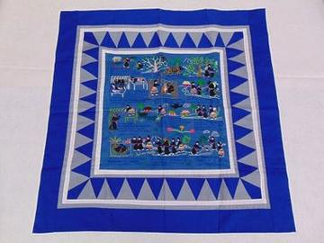
Hmong story cloth
China +3 · Crafts and making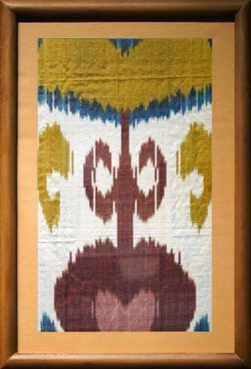
Ikat Pattern Dyeing
Uzbekistan · Crafts and makingPlay preview · in the Textile Crafts of the World app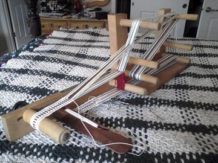
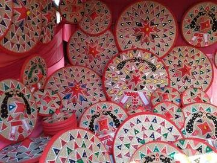
Jaapi weaving
India · Crafts and making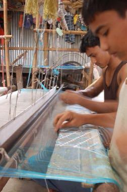
Jamdani muslin weaving
Bangladesh · Crafts and making
Kalamkari pen painting
Worldwide · Crafts and makingPlay preview · in the Folk Painting of the World app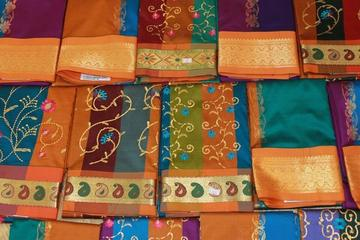

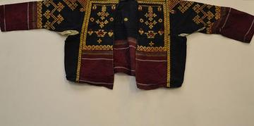


Ketupat
Malaysia +2 · Crafts and making
Kiondo basket weaving
Kenya · Crafts and makingPlay preview · in the Basketry & Straw of the World app
Kira and Kushuthara backstrap weaving
Bhutan · Crafts and making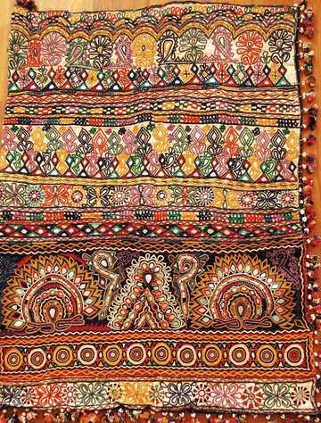

Lao silk brocade weaving
Laos · Crafts and makingPlay preview · in the Weaving & Lace of the World app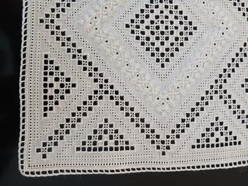

Lielvārde Sash Pattern Weaving
Latvia · Crafts and making
Malagasy lamba silk weaving
Worldwide · Crafts and makingPlay preview · in the Textile Crafts of the World app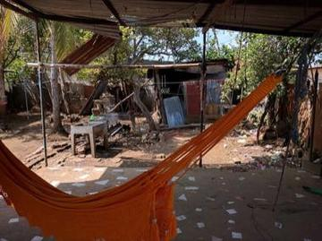
Masaya Hammock Weaving
Nicaragua · Crafts and makingPlay preview · in the Looms & Bands of the World app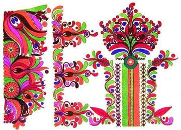
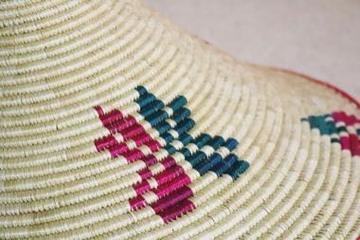
Mesob basket weaving
Ethiopia · Crafts and makingPlay preview · in the Basketry & Straw of the World app
Moldovan Woven Carpet Pattern Studio
Moldova · Crafts and making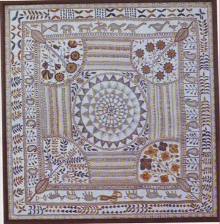
Nakshi Kantha embroidery
Bangladesh · Crafts and makingPlay preview · in the Weaving & Lace of the World app

Nordic Colourwork Knitting
United Kingdom +2 · Crafts and makingPlay preview · in the Textile Crafts of the World app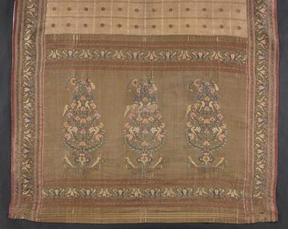

Panu di Pinti Weaving
Guinea-Bissau · Crafts and making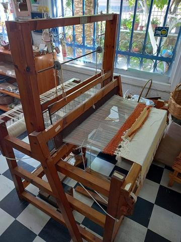

Persian Carpet Knotting
Iran +1 · Crafts and makingPlay preview · in the Textile Crafts of the World app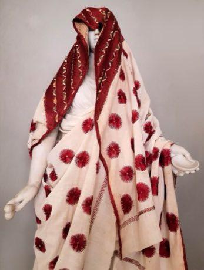
Phulkari darn-stitch embroidery
India +1 · Crafts and makingPlay preview · in the Textile Crafts of the World app
Pirot Kilim Weaver
Serbia · Crafts and making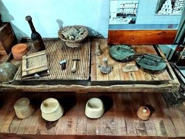
Plis Cap Felter
Albania +1 · Crafts and making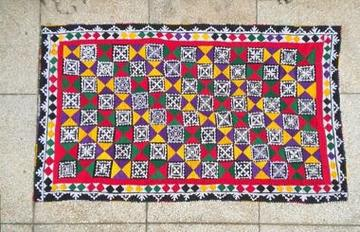
Ralli patchwork quilt
Pakistan +1 · Crafts and making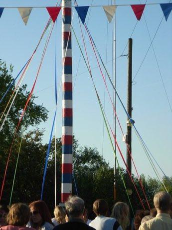
Ribbon Pole Weave
United Kingdom +1 · Dances
Sadu Bedouin ground-loom weaving
Jordan · Crafts and makingPlay preview · in the Weaving & Lace of the World app
Sashiko Stitch Patterns
Japan · Crafts and makingPlay preview · in the Textile Crafts of the World app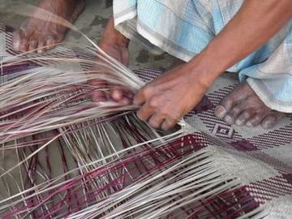
Shital pati cool mat weaving
Bangladesh · Crafts and makingPlay preview · in the Mats & Wicker of the World app
Slutsk Sash Weaving
Belarus · Crafts and making

Sri Lankan batik wax-resist painting
Sri Lanka · Crafts and making
Suzani embroidery
Uzbekistan +1 · Crafts and makingPlay preview · in the Textile Crafts of the World app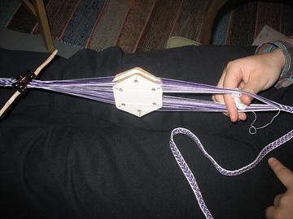

Tais
Timor-Leste · Crafts and making
Tartan Sett Weaving
United Kingdom +1 · Crafts and makingPlay preview · in the Textile Crafts of the World app
Tatreez Palestinian Cross-Stitch
Palestine +1 · Crafts and makingPlay preview · in the Textile Crafts of the World app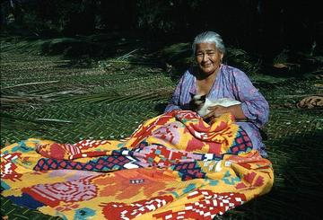

Turkmen gul carpet
Turkmenistan · Crafts and makingPlay preview · in the Weaving & Lace of the World app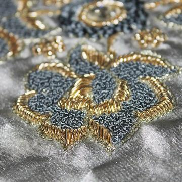
Backstrap loom weaving
Worldwide · Crafts and makingPlay preview · in the Looms & Bands of the World appFederkielstickerei
Austria +1 · Crafts and makingPlay preview · in the Stitch & Thread of the World appJaki-ed mat weaving
Marshall Islands · Crafts and makingPlay preview · in the Island Weaving of the World appKani shawl weaving by talim code
India · Crafts and makingPlay preview · in the Weaving & Lace of the World appMaonan flower bamboo hat
China · Crafts and makingPlay preview · in the Mats & Wicker of the World appShan seed-treadle loom
Myanmar · Crafts and makingPlay preview · in the Looms & Bands of the World app